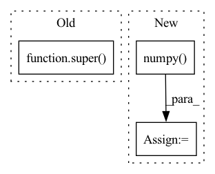

Pattern ID :29223

Before Change
batch_size: _typing.Optional[int] = 1, num_workers: int = 0,
shuffle: bool = True, **kwargs
):
super().__init__(
torch_geometric.utils.add_remaining_self_loops(edge_index)[0],
target_nodes_indexes, layer_wise_arguments, batch_size, num_workers, shuffle, **kwargs
)
After Change
self.__edge_weight.numpy(),
(self._edge_index[1].numpy(), self._edge_index[0].numpy())
))
self.__integral_edges_indexes_sparse_matrix: sp.csr_matrix = sp.csr_matrix((
np.arange(self._edge_index.size(1)),
(self._edge_index[1].numpy(), self._edge_index[0].numpy())
))
def __sample_edges(
In pattern: SUPERPATTERN
Frequency: 3
Non-data size: 3
Instances
Fragment ID: 85967455
Project Name: thumnlab/autogl
Commit Name: 4078e51e36e15872e55f633370f4056c045ae2d1
Time: 2021-06-01
Author: null
File Name: autogl/module/train/sampling/sampler/layer_dependent_importance_sampler.py
M Class Name: LayerDependentImportanceSampler
N Class Name: LayerDependentImportanceSampler
M Method Name: __init__(7)
N Method Name: __init__(7)
M Parent Class: target_dependant_sampler.BasicLayerWiseTargetDependantSampler
N Parent Class: target_dependant_sampler.BasicLayerWiseTargetDependantSampler
M File Name: autogl/module/train/sampling/sampler/layer_dependent_importance_sampler.py
N File Name: autogl/module/train/sampling/sampler/layer_dependent_importance_sampler.py
M Start Line: 104
M End Line: 108
N Start Line: 219
N End Line: 231
'>
Before Change
lb, ub = model.compute_bounds(x=(my_input,), method="backward")
import pdb; pdb.set_trace()
return super().get_one_step_reachable_set(input_constraint, output_constraint)
def create_model(self, num_steps):
After Change
lb, ub = model.compute_bounds(x=(my_input,), method="backward")
output_constraint.range = np.vstack((lb.detach().numpy(), ub.detach().numpy())).T
return output_constraint, {}
'>
Fragment ID: 85967454
Project Name: mit-acl/nn_robustness_analysis
Commit Name: 0da01fc517d436fe7bdf533c50f58149ec5b3e29
Time: 2023-03-07
Author: nrober1122@gmail.com
File Name: nn_closed_loop/nn_closed_loop/propagators/ClosedLoopAUTOLIRPAPropagator.py
M Class Name: ClosedLoopAUTOLIRPAPropagator
N Class Name: ClosedLoopAUTOLIRPAPropagator
M Method Name: get_one_step_reachable_set(4)
N Method Name: get_one_step_reachable_set(4)
M Parent Class: ClosedLoopPropagator
N Parent Class: ClosedLoopPropagator
M File Name: nn_closed_loop/nn_closed_loop/propagators/ClosedLoopAUTOLIRPAPropagator.py
N File Name: nn_closed_loop/nn_closed_loop/propagators/ClosedLoopAUTOLIRPAPropagator.py
M Start Line: 74
M End Line: 86
N Start Line: 76
N End Line: 87
'>
Before Change
return self.model(img.to(self.device))
def postprocess(self, inference_output):
super().__init__(inference_output)
_service = DBTextDetectionHandler()
After Change
def postprocess(self, data):
res = []
data = data.detach().cpu().numpy()
for pred in data:
prob_mask = (pred[0] * 255).astype(np.uint8)
thresh_mask = (pred[1] * 255).astype(np.uint8)
imageio.imwrite(os.path.join(self.tmp_dir, "foo1.jpg"), prob_mask)
'>
Fragment ID: 85967460
Project Name: huyhoang17/db_text_minimal
Commit Name: f4f4a579c2735d4894dbd7a518d7edd3a380158c
Time: 2020-06-17
Author: hoangphan0710@gmail.com
File Name: src/db_handler.py
M Class Name: DBTextDetectionHandler
N Class Name: DBTextDetectionHandler
M Method Name: postprocess(2)
N Method Name: postprocess(2)
M Parent Class: BaseHandler
N Parent Class: BaseHandler
M File Name: src/db_handler.py
N File Name: src/db_handler.py
M Start Line: 72
M End Line: 72
N Start Line: 95
N End Line: 107